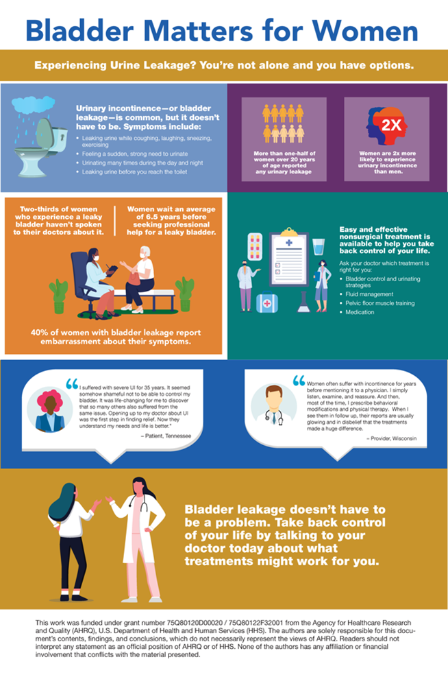
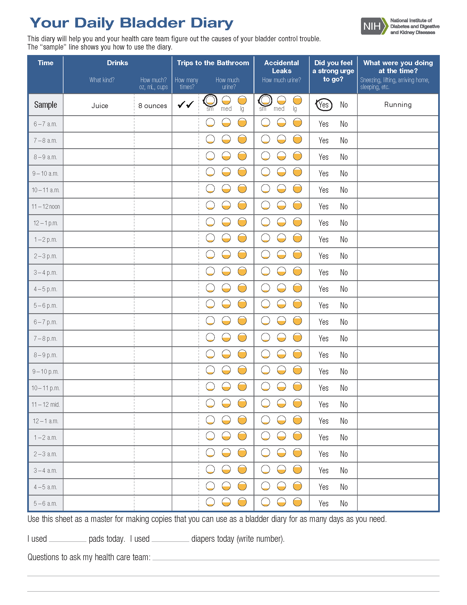

It's the summer of 2024, and I look forward to some incredible adventures. Earlier this year, I had a fantastic 10-hour journey on Amtrak that encouraged me to find more ways to explore via train. One thing that made it so great was the easy access to restrooms near my seat. For some, this might not seem like a big deal. Still, for anyone with health issues that make it necessary to reach a restroom quickly, like urinary incontinence (UI) or overactive bladder (OAB), it's a significant benefit. Did you know in the U.S.:
· More than 25 million adults have urinary incontinence, which primarily affects women over 50.
· Additionally, about 30% of men and 40% of women in the U.S. are affected by overactive bladder. Both conditions can significantly impact your quality of life.
· More than one-half of women over 20 years of age reported any urinary leakage.
· Two-thirds of women who experience a leaky bladder haven’t spoken to their doctors about it; overall, women wait an average of 6.5 years before seeking professional help for a leaky bladder.
Even though urinary incontinence and overactive bladder have some similar symptoms, it's essential to know that urinary incontinence involves accidentally leaking urine. An overactive bladder is when you need to pee frequently throughout the day. These Top 15 Qs & As about Urinary Incontinence and Overactive Bladder are here to help you understand these conditions better. Look at the questions that you find most relevant, as you may encounter these conditions now or in the future, either personally or in someone you know. Please take our short poll at the end to help us continue bringing you relevant information, and enter you into a drawing for an IAWH hand-designed toiletry bag by https://www.instagram.com/simplyqueenbysherell/.
Over the next few days, we'll add to this discussion urinary tract infections and their association with Menopause, including a robust number of YouTube videos on these topics and other online resources.
The Top 15 Qs & As About Urinary Incontinence and Overactive Bladder are curated from the National Institute on Health- Office on Women's Health, American College of Obstetrics and Gynecology, Brigham and Women’s Hospital, and the Agency for Healthcare Research and Quality.
- What is Urinary Incontinence and Overactive Bladder?
Urinary incontinence (UI) and Overactive bladder (OAB) are two of the most common conditions that can affect normal urination. Many patients need clarification on these terms. Both conditions have some things in common; sometimes, a person can have both. Still, they're different. Let's start with how urine is made by the kidneys and stored in the bladder. The bladder has muscles that tighten when you need to urinate. When the bladder muscles tighten, urine is forced out of your bladder through a urethra tube. At the same time, sphincter muscles around the urethra relax to let the urine out of your body.
- Incontinence can happen when the bladder muscles suddenly tighten, and the sphincter muscles are not strong enough to pinch the urethra shut. This causes a sudden, strong urge to urinate that you may not be able to control. Pressure caused by laughing, sneezing, or exercising can cause you to leak urine. Urinary incontinence may also happen if there is a problem with the nerves that control the bladder muscles and urethra. Urinary incontinence can mean you leak a small amount of urine or release a lot of urine all at once.
- Overactive bladder involves the urge to urinate, whereas urinary incontinence involves involuntary urination. What's more, OAB describes a condition in which you have a strong urge to urinate multiple times a day and overnight, even though your bladder is not full. People who urinate eight or more times during the day or at least twice overnight may be diagnosed with the condition. About one-third of people with overactive bladder experience urinary incontinence.
2. Who gets urinary incontinence?
Urinary incontinence affects twice as many women as men. This is because reproductive health events unique to women, like pregnancy, childbirth, and Menopause, affect the bladder, urethra, and other muscles that support these organs. Urinary incontinence can happen to women at any age, but it is more common in older women. This is probably because of hormonal changes during Menopause. More than 4 in 10 women 65 and older have urinary incontinence.

3. Why does urinary incontinence affect more women than men?
As mentioned, women have unique health events, such as pregnancy, childbirth, and Menopause, that may affect the urinary tract and the surrounding muscles. The pelvic floor muscles that support the bladder, urethra, uterus (womb), and bowels may become weaker or damaged. When the muscles that support the urinary tract are weak, the muscles in the urinary tract must work harder to hold urine until you are ready to urinate. This extra stress or pressure on the bladder and urethra can cause urinary incontinence or leakage.
Also, the female urethra is shorter than the male urethra. Any weakness or damage to the urethra in a woman is more likely to cause urinary incontinence. This is because there is less muscle keeping the urine in until you are ready to urinate.
However, in a recent Boston Children’s Hospital study that surveyed female athletes, 16.5 percent reported urinary incontinence during athletic activity. Athletes participating in high-impact sports such as running, cheerleading, and gymnastics were more than four times more likely to report urinary incontinence than athletes in other sports categories (See more on this topic in the Resources section).
4. What are the types of urinary incontinence that affect women?
The two most common types of urinary incontinence in women are:
- Urgency incontinence is the inability to hold urine long enough to reach a restroom. It can be associated with having to urinate often and feeling a strong, sudden urge to urinate. Urgency incontinence can be a separate condition, but it may also indicate other diseases or conditions that warrant medical attention.
- Stress incontinence: Urine leakage during exercise, coughing, sneezing, laughing, lifting heavy objects, or performing other body movements that pressure the bladder.
Many women with urinary incontinence have both stress and urge incontinence. This is called "mixed" incontinence.
- Functional incontinence: This is urine leakage due to difficulty reaching a restroom in time because of physical conditions, such as arthritis, injury, or other disabilities.
- Overflow incontinence. Leakage occurs when the quantity of urine.
5. How can I prevent urinary incontinence?
Although you can't always prevent urinary incontinence, you can take steps to lower your risk:
- Practice Kegels daily, especially during pregnancy and after talking to your doctor, nurse, or midwife.
- Reach or stay at a healthy weight (which is different for everyone).
- Eat foods with fiber to help prevent constipation.

6. What are the symptoms of urinary incontinence?
Urinary incontinence is not a disease by itself. Urinary incontinence is a symptom of another health problem, usually weak pelvic floor muscles. In addition to urinary incontinence, some women have other urinary symptoms:
- Pressure or spasms in the pelvic area that cause a strong urge to urinate
- Going to the bathroom more than usual (more than eight times a day or more than twice at night)
- Urinating while sleeping (bedwetting)
7. What causes urinary incontinence?
Urinary incontinence is usually caused by problems with the muscles and nerves that help the bladder hold or pass urine and certain health events unique to women, such as pregnancy, childbirth, and Menopause (each “cause” is further explained below). Other causes of urinary incontinence include:
- Overweight. Being overweight puts pressure on the bladder, weakening the muscles over time. A weak bladder cannot hold as much urine.
- Constipation. Problems with bladder control can happen to people with long-term (chronic) constipation. Constipation, or straining to have a bowel movement, can put stress or pressure on the bladder and pelvic floor muscles. This weakens the muscles and can cause urinary incontinence or leaking.
- Nerve damage. Damaged nerves may send signals to the bladder at the wrong time or not at all. Childbirth and health problems such as diabetes and multiple sclerosis can cause nerve damage in the bladder, urethra, or pelvic floor muscles.
- Surgery. Any surgery that involves a woman's reproductive organs, such as a hysterectomy, can damage the supporting pelvic floor muscles, especially if the uterus is removed. If the pelvic floor muscles are damaged, a woman's bladder muscles may not work like they should. This can cause urinary incontinence.
Sometimes urinary incontinence lasts only for a short time and happens because of other reasons, including:
- Certain medicines. Urinary incontinence may be a side effect of medicines such as diuretics ("water pills" used to treat heart failure, liver cirrhosis, hypertension, and certain kidney diseases). The incontinence often goes away when you stop taking the medicine.
- Caffeine. Drinks with caffeine can cause the bladder to fill quickly, which can cause you to leak urine. Studies suggest that women who drink more than two cups of drinks with caffeine per day may be more likely to have problems with incontinence. Limiting caffeine may help with incontinence because your bladder has less strain.
- Infection. Infections of the urinary tract and bladder may cause incontinence for a short time. Bladder control often returns when the infection goes away.
8. How does pregnancy cause urinary incontinence?
As many as 4 in 10 women get urinary incontinence during pregnancy. During pregnancy, as your unborn baby grows, he or she pushes down on your bladder, urethra, and pelvic floor muscles. Over time, this pressure may weaken the pelvic floor muscles and lead to leaks or problems passing urine. Most problems with bladder control during pregnancy go away after childbirth when the muscles have had some time to heal. If you're still having bladder problems 6 weeks after birth, talk to your doctor, nurse, or midwife.
9. How does childbirth cause urinary incontinence?
Problems during labor and childbirth, especially vaginal birth, can weaken pelvic floor muscles and damage the nerves that control the bladder. Most bladder control problems due to labor and delivery go away after the muscles have had time to heal. If you're still having bladder problems 6 weeks after childbirth, talk to your doctor, nurse, or midwife.
10. How does Menopause cause urinary incontinence?
Some women have bladder control problems after they stop having periods. Researchers think having low levels of the hormone estrogen after Menopause may weaken the urethra. The urethra helps keep urine in the bladder until you urinate. Also, like all muscles, the bladder and urethra muscles lose some strength as you age. This means you may not be able to hold as much urine as you get older. Later this month, IAWH will provide more information specific to this topic.
11. What type of doctor or nurse should I go to for help with urinary incontinence?
You should make an appointment with your primary care provider, OB/GYN, or nurse practitioner. They will usually refer you to a urogynecologist or urologist (who treats urinary problems in men and women) or a doctor specializing in urinary tract diseases.
12. How is urinary incontinence diagnosed?
Urinary incontinence is diagnosed with a complete physical examination focusing on the urinary and nervous systems, reproductive organs, and urine samples. Your healthcare professional will ask you about your symptoms and your medical history, including:
- How often do you empty your bladder?
- How and when do you leak urine?
- How much urine do you leak?
- When did your symptoms start?
- What medicines do you take?
- Have you ever been pregnant, and what was your labor and delivery experience?
In addition, your healthcare provider may do a physical exam to look for signs of health problems that can cause incontinence and may also do other tests, such as:
- Urine test. After you urinate into a cup, the doctor or nurse will send your urine to a lab. At the lab, your urine will be checked for infection or other causes of incontinence.
- Ultrasound. Your doctor will use an ultrasound wand on the outside of your abdomen to take pictures of the kidneys, bladder, and urethra. Your doctor will look for anything unusual that may be causing urinary incontinence.
- Bladder stress test. During this test, you will cough or bear down as if pushing during childbirth as your doctor watches for loss of urine.
- Cystoscopy. Your doctor inserts a thin tube with a tiny camera into your urethra and bladder to look for damaged tissue. Depending on the type of cystoscopy you need, your doctor may use medicine to numb your skin and urinary organs while awake, or you may be fully sedated.
- Urodynamics. Your doctor inserts a thin tube into your bladder and fills it with water. This allows your doctor to measure the pressure in your bladder to see how much fluid it can hold.
Your doctor may also ask you to keep a diary for 2 to 3 days to track when you empty your bladder or leak urine (or you can do this on your own). The diary may help your doctor or nurse see patterns in the incontinence that give clues about the possible causes and treatments that might work for you.
13. What steps can I take at home to treat urinary incontinence?
Your healthcare team may suggest some things you can do at home to help treat urinary incontinence. Some people do not think that such simple actions can treat urinary incontinence. However, these steps help prevent urinary incontinence for many women or help leak less urine. These steps may include:
- Doing Kegel exercises. Kegel exercises to strengthen your pelvic floor muscles may help if you have stress incontinence.
- Training your bladder. The NIH suggests that to help control the habit of having to pee very often; you should try going to the bathroom at certain times. Start by keeping track (see newsletter attachment to download a bladder diary) of how often you go to the toilet each day. Then, try to wait 15 minutes longer before going each time. Even if you don't feel you need to go, try to pee. Doing this helps your bladder learn to hold more pee before needing to go again.
- Losing weight. Extra weight puts more pressure on your bladder and nearby muscles, leading to bladder control problems. If you are overweight, your healthcare professional can help you create a plan to lose weight by choosing healthy foods and getting regular physical activity.
- Changing your eating habits. Drinks with caffeine, carbonation (such as sodas), or alcohol may make bladder leakage or urinary incontinence worse. Your doctor might suggest that you stop drinking these drinks for a while to see if that helps.
- Quitting smoking. Smoking can make many health problems, including urinary incontinence, worse.
- Treating constipation. Your doctor might recommend eating more fiber since constipation can worsen urinary incontinence. Eating foods with a lot of fiber can make you less constipated.
You can also buy pads or protective underwear while you take other steps to treat urinary incontinence. These are sold in many stores that sell feminine hygiene products, such as tampons and pads.
A note about water consumption and urinary incontinence: Many people with urinary incontinence think they need to drink less to reduce how much urine leaks out. You'll want to speak with your doctor about your water intake because you need fluids, especially water, for good health. (But alcohol and caffeine can irritate or stress the bladder and make urinary incontinence worse.)
14. What are some medical treatments forstress incontinence?
Be patient as you work with your healthcare team on a treatment plan. Different treatments may take a month or longer to begin working. If steps you can take at home do not work to improve your stress incontinence, your doctor may talk to you about other options; here are a few:
- Medicine. After Menopause, applying vaginal creams, rings, or patches with estrogen (called topical estrogen) can help strengthen the muscles and tissues in the urethra and vaginal areas. A stronger urethra will help with bladder control. Learn more about menopause treatments.
- Vaginal pessary. A reusable pessary is a small plastic or silicone device (shaped like a ring or small donut) that you put into your vagina. The pessary pushes up against the wall of the vagina and the urethra to support the pelvic floor muscles and help reduce stress incontinence. Pessaries come in different sizes, so your doctor or nurse must write a prescription for the size that will fit you. Another type of pessary looks like a tampon, used once and thrown away. You can get this type of pessary at a store selling feminine hygiene products.
- Bulking agents. Your doctor can inject a bulking agent, such as collagen, into tissues around the bladder and urethra to cause them to thicken. This helps keep the bladder opening closed and reduces the amount of urine leaking.
-
Surgery. Surgery for urinary incontinence is not recommended if you plan to get pregnant in the future. Pregnancy and childbirth can cause leakage to happen again. The two most common types of surgery for urinary incontinence are:
-
Sling procedures. Sling surgery is the most common surgery doctors use to treat urinary stress incontinence. That’s when certain movements or actions, like coughing, sneezing, or lifting, put pressure on your bladder and make you pee a little.
- Colposuspension. This surgery also helps hold the bladder in place with stitches on either side of the urethra. This is often referred to as a Burch procedure.
15. What are some nonsurgical treatments forurge incontinence?
If steps you can take at home do not work to improve your urge incontinence, your doctor may suggest one or more of the following treatments:
- Medicines. Medicines to treat urge incontinence help relax the bladder muscle and increase the amount of urine your bladder can hold.
- Botox. Botox injections in the bladder can help if other treatments don't work. Botox helps relax the bladder and increases the amount of urine your bladder can hold. You may need to get Botox treatments about once every 3 months.
- Nerve stimulation. This treatment uses mild electric pulses to stimulate nerves in the bladder. The pulses may increase blood flow to the bladder and strengthen the muscles that help control the bladder. Talk to your doctor about the different types of nerve stimulation.
- Biofeedback. Biofeedback therapy is a conservative treatment option used to help strengthen the muscles involved in controlling bladder and bowel control functions.
- Surgery. If you have severe urge incontinence, your doctor may recommend surgery to help increase the amount of urine your bladder can hold or to remove your bladder. Removing your bladder is a serious surgery and is an option only when no other treatments work, and the quality of your life is seriously affected.
Resources on Urinary Incontinence and Overactive Bladder
-
American College of Obstetricians and Gynecologists (ACOG), Urinary Incontinence
-
Brigham and Women’s Hospital, Overactive Bladder (OAB) with or without Urinary Incontinence (UI)
(IAWH Note to readers: Although the article listed above is directed toward "urologists," its research is helpful to anyone with a heightened interest in female hormonal therapy, especially regarding chronic UTIs.)
-
7 Things You Should Always Discuss with Your Gynecologist: When it comes to sexual and reproductive health, it can be hard to know what's "normal" and what may be a sign of a potential health problem. Even if you feel embarrassed about specific issues, your gynecologist has seen and heard it all and is there to help you, not to pass judgment.
Helpline Access on Women’s Health and Urinary Incontinence, and Frequency Asked Questions.Search these websites or call to speak with someone
- Office on Women's Health Helpline at 1-800-994-9662 or contact the following organizations:
- National Institute on Aging (NIA), NIH, HHS
- Phone Number: 1-800-222-2225
- National Kidney and Urologic Diseases Information Clearinghouse, NIDDK, NIH, HHS
- Phone Number: 301-496-3583
- American Urogynecologic Society
- Phone Number: 202-367-1167
- National Association for Continence
- Phone Number: 1-800-BLADDER
- Urology Care Foundation
- Phone Number: 410-689-3998
Helpful Tips to Get the Most out of Your Healthcare VisitsThese tips help you get the most out of your healthcare visits and ensure you have all the information you need about your health condition.
· Write down any questions or concerns you have before your appointment.
· Keep a list of all the medications and supplements you are taking.
· Take notes during your appointment so you can remember everything later.
Also, ask your provider – at a minimum to:
· Explain your condition in general terms.
· What caused this condition?
· What are my options for treatment?
· Discuss the risks and benefits of treatment options.
· Once you know your options, ask about the pros and cons of each one.
· Find out what side effects might occur,
· How long the treatment would continue, and
· How likely is it that the treatment will work for you?
Please take our short poll to help us continue bringing you relevant information, and enter you into a drawing for an IAWH hand-designed toiletry bag by https://www.instagram.com/simplyqueenbysherell/.
Janine E. Payne, MPHCo-Director, IAWH
This article first appeared on the IAWH Health blog on July 13, 2024 and is preserved here as part of the IAWH Health Journal archive. Information reflects what was known at the time of publication. This article is for general education and is not medical advice.